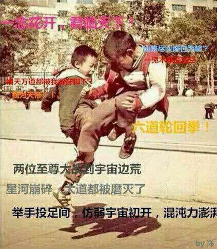

宇宙破壞拳
介紹：
前置超高、形容和畫面效果極為酷炫、數值+1，跑團界鼎鼎大名的絕學
―宇宙破壞拳。
前置：高貴的宇宙破壞拳，需要擁有一個A級以上強化才有資格進行購買。
價格：500點
效果：
在使用一個招式的時候，你可以自行訂制畫面特效，且獲得額外1DP表現（讀作高貴）加值。
需要獲得此好處，你必須主動喊出招式的名字。
變體―更加高貴的宇宙破壞拳：
需要使用宇宙破壞拳是個標準動作，理所當然不會和任何低賤招式兼容。
每影片可以使用一次，用完陷入力竭狀態。
作為好處，你可以獲得1點高貴加值，這不會和任何加值疊加。
你可以自行定制畫面效果。
